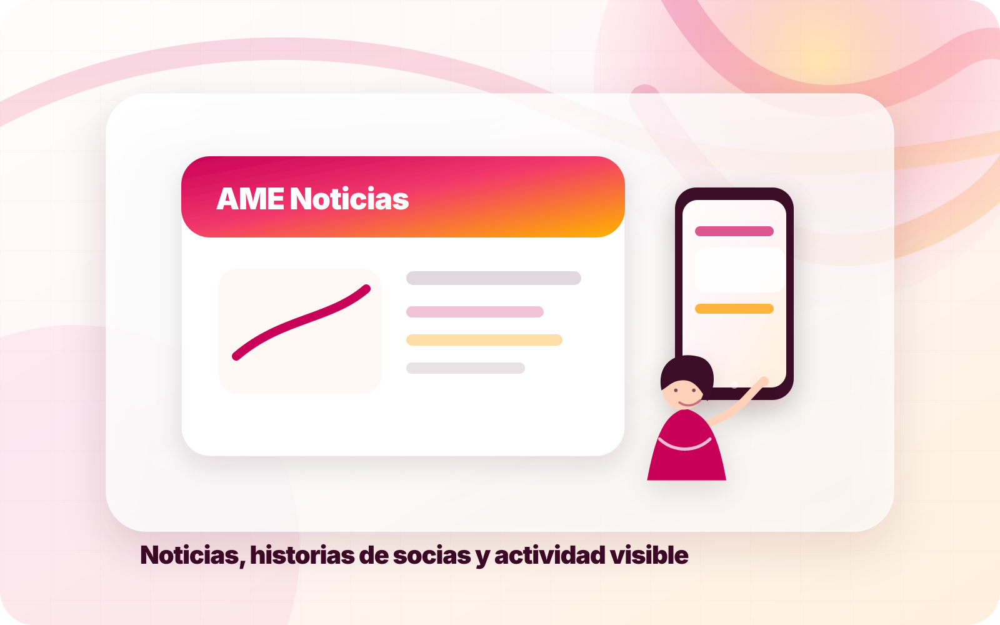
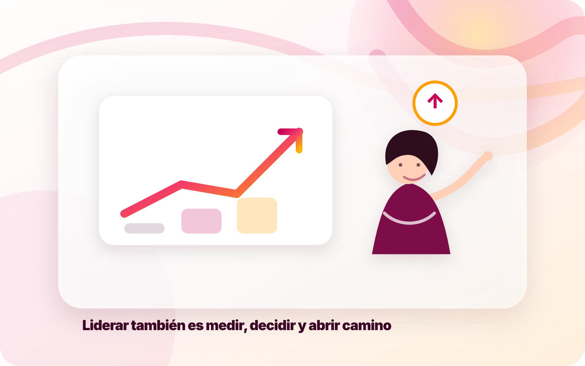
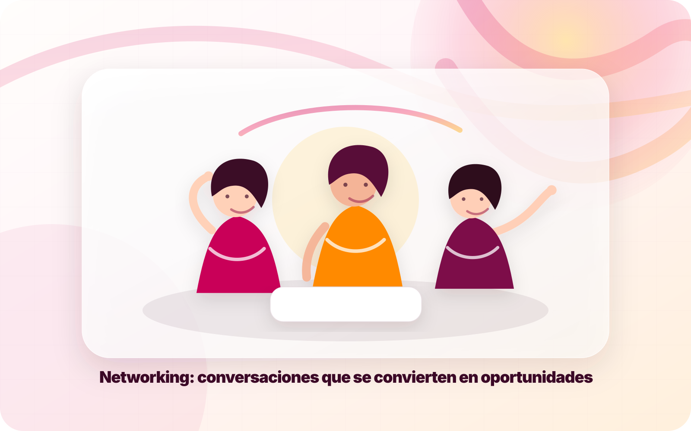
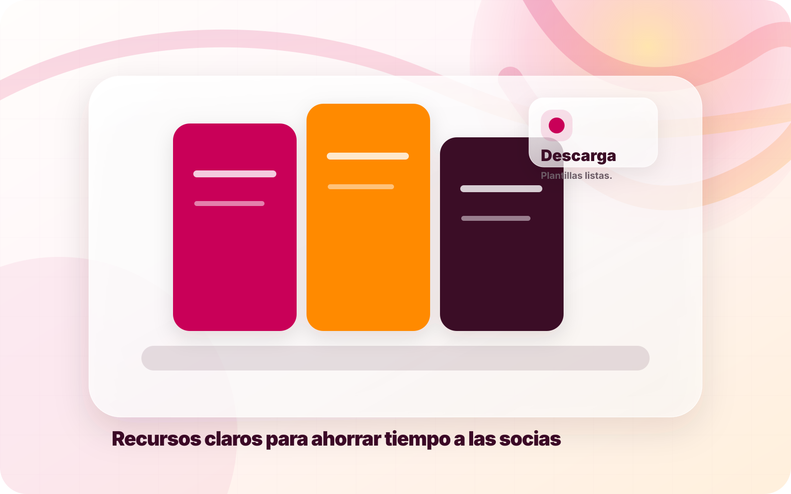
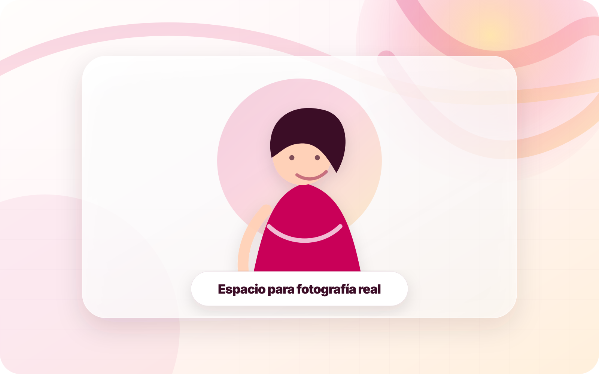
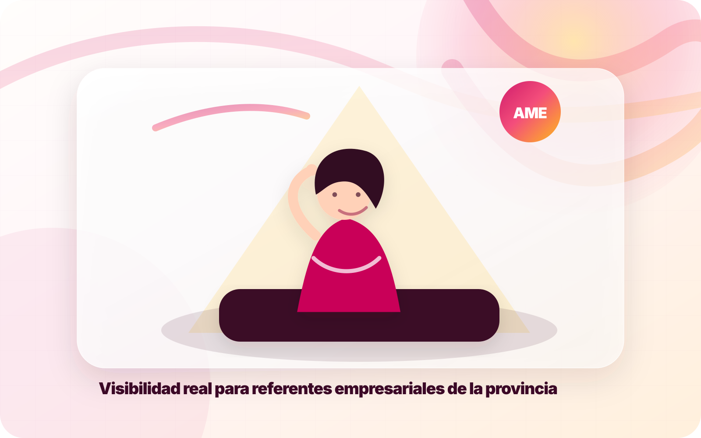

AME inicia una nueva etapa digital
La asociación refuerza su presencia online con una web más clara, móvil y preparada para comunicar su actividad.
La web incluye una sección de contenidos para posicionar en Google, informar a socias y mostrar actividad constante.

La asociación refuerza su presencia online con una web más clara, móvil y preparada para comunicar su actividad.

Una guía breve sobre posicionamiento local, redes y propuesta de valor para profesionales.

Recomendaciones para preparar reuniones, presentar tu proyecto y hacer seguimiento.

Resumen editable con enlaces a programas, ayudas y organismos de interés.

Una sección futura para dar voz a proyectos reales de mujeres de Ourense.
Artículos sobre emprendimiento femenino, ayudas, digitalización, entrevistas y eventos pueden atraer tráfico cualificado desde Google y redes sociales.
